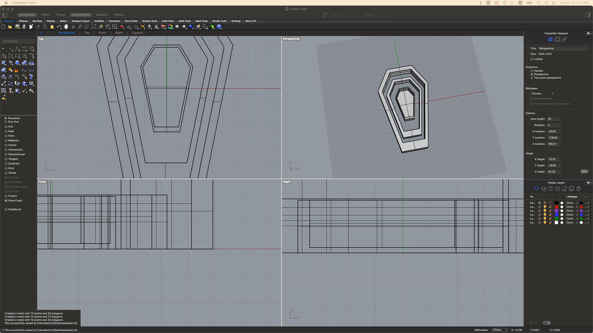
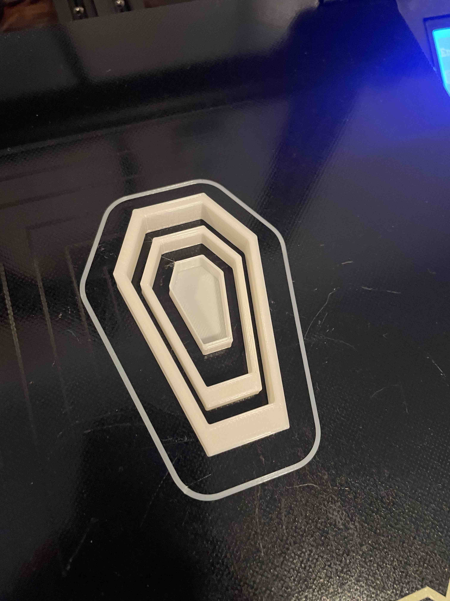

3D Printing


It took me a very long time to set up my 3d printer. I ran into a issue of one of the extruder corner being too close to the glass bed. After hours of searching, I realized that I can move the z-axis limit switch to bring the extruder z-axis offset up. The bed leveing procedure went as expected, so I moved onto printing my cubes.


Above are low, standard, and super quality cube printing times, along with the concentric cubes. Out of the three qualities, I liked the low quality cube just because it took the least amount of time to create. Using the lowest quality, I printed the concentric cubes. Please see the images for the times that it took to print.


I then worked on the cylinders. Please see above for all times that were associated with printing each of the cylinder. The cylinder on its side was particularly interesting given the amount of time it took, as well as the rough edges that it left on the side.

 
Finally, I created my own nested object. I had such a difficult time putting together my 3d printer so I decided to put my feelings inside this nested coffin.